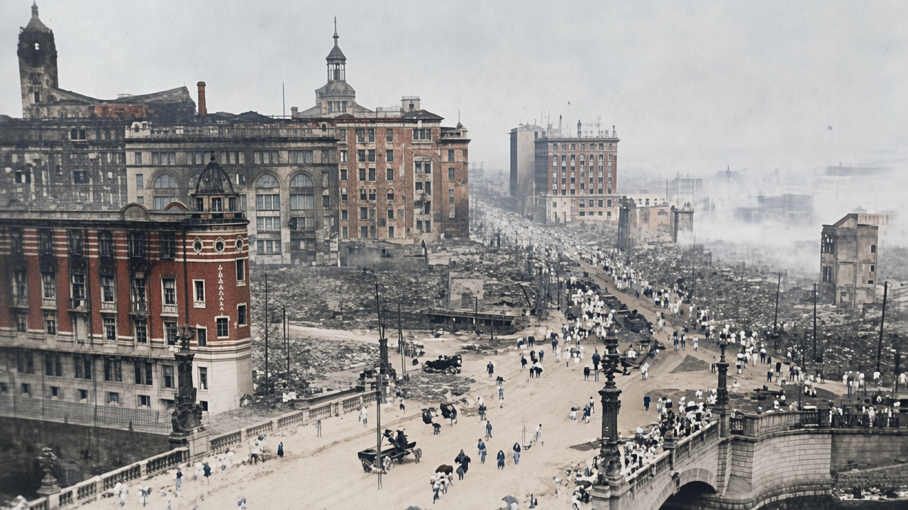
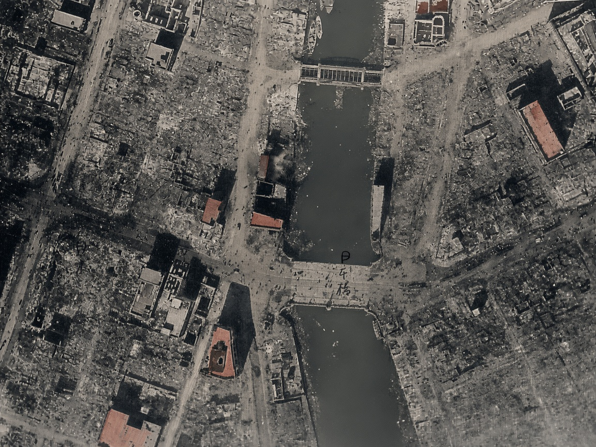
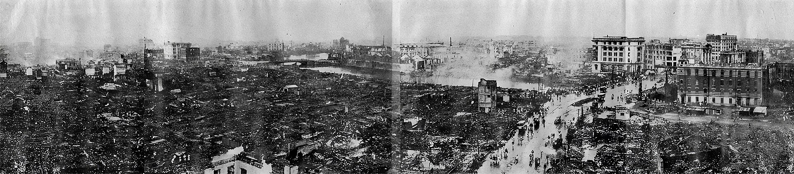
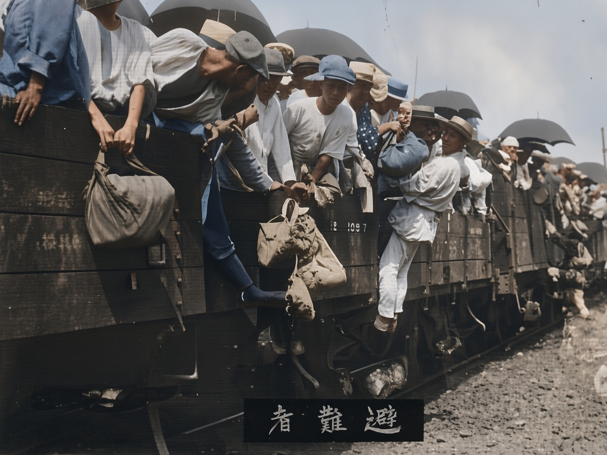
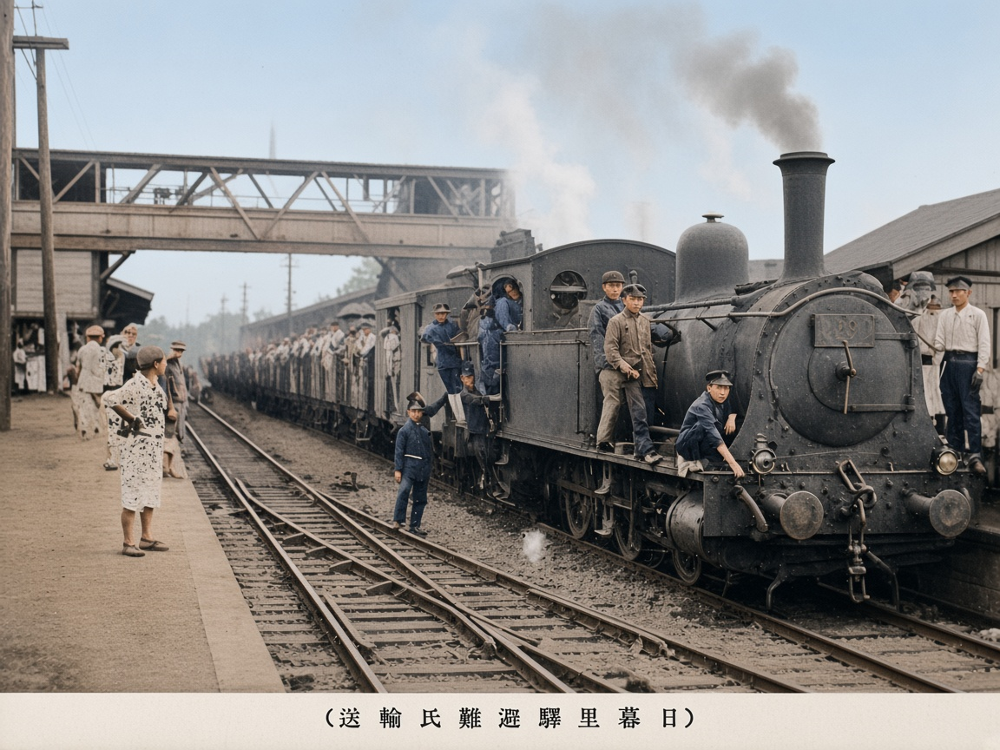
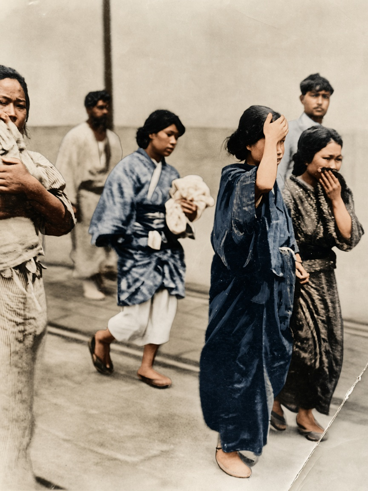
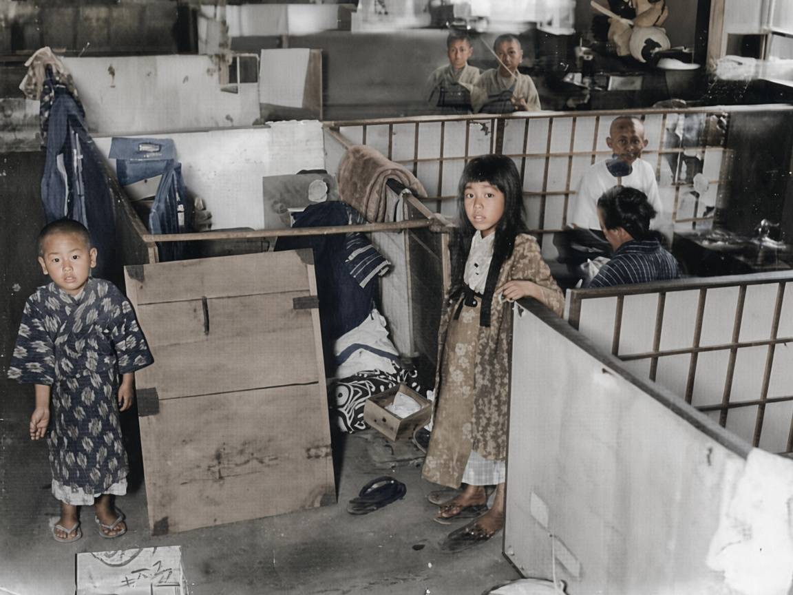
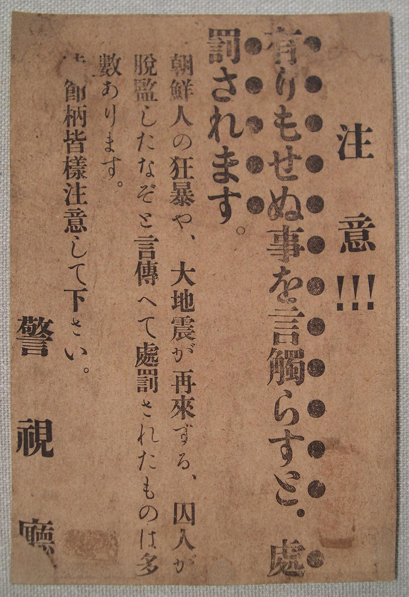

01 · 1923年9月 · 日本桥
桥上还在走人
铁桥还在。栏杆上站着人，桥上有马车和步行的人。左边的砖楼还立着，窗是空的。马路对面，屋顶没了，只剩烟和一截墙。
上一辑东京照片里的日本桥，是火还没来的时候。这一张是同一座桥的后面。砖的红色、人的衣服都是着色补上的。原片宽大约四百像素，小人脸不能认。
号外
大正十二年九月一日 · 东京、横滨
1923 年 9 月 1 日午前 11 时 58 分，相模湾一带发生大地震。东京和横滨烧掉的，主要不是震塌的房子，是随后两天的火。日本桥的铁桥还跨在河上，桥两边的街成了灰。
黑白原片按画面着色。砖、衣服、天空的颜色是推定。原片很小或很糊的地方，人脸不能拿来认人。横幅那一张太宽，只放原片。传单本来就是纸色，不上色。点图放大。

01 · 1923年9月 · 日本桥
铁桥还在。栏杆上站着人，桥上有马车和步行的人。左边的砖楼还立着，窗是空的。马路对面，屋顶没了，只剩烟和一截墙。
上一辑东京照片里的日本桥，是火还没来的时候。这一张是同一座桥的后面。砖的红色、人的衣服都是着色补上的。原片宽大约四百像素，小人脸不能认。
02 · 1923年 · 日本桥上空

河是直的，桥横在河上。两边的街还是方格子，格子里面几乎是空的：瓦没了，只剩墙基和灰。少数屋顶还是红的，是没烧透的。
手写的「日本桥」在原片上。着色把少数残存屋顶涂成暗红色，这是推定。街的空，不是公园，是烧掉以后的空。
03 · 日本桥与神田

河从画面中间穿过。左岸几乎铺平了。右岸有几座洋楼还站着，楼前面的路上已经有人在走。烟还挂在远处。
木造的街区烧得干净，砖和钢筋混凝土的楼更容易留下壳。所以照片里总是：一片灰，中间戳着几栋还没倒的洋楼。
04 · 避难

货车没有客座。人扒在车帮外面，腿悬着，手里是包袱和伞。伞是黑的，挤成一排。车帮上能看见编号。
原片底下的「避難者」从右往左读。着色把衣服补成白和蓝，伞仍是深色。原片不大，脸是推定，不能认人。
05 · 日暮里站

机车头朝右，烟往上走。人站在踏板、煤水车上，也站在后面一长串车厢顶和车帮上。左边站台还有没上去的人。
日暮里在当时东京的东北边上，是往外送人的站。图下那行字在原片上，从右往左是「日暮里駅避難民輸送」。衣服的蓝色是着色加上的。
06 · 横滨 · 铁道边

人沿着铁轨走，不是在等车。有人抱着包袱，有人用手挡着脸。后面是一堵空墙。照片右边有一道裂口，是原片就撕开的。
横滨烧得和东京一样狠，港和山下町一带几乎空了。和服的蓝和灰是着色推定。脸保持原片的糊，不要当成清晰肖像。
07 · 避难棚

地是泥的。木箱、隔扇、晾着的衣服把一块空地隔成几户。前面站着两个孩子。后面隔板那边还有人，像在做饭。
公园、神社、学校操场上搭过成片的棚。这张没有写是哪一处。原片大约六百像素宽，着色把孩子的脸补清楚了，不能拿来认人。衣服花纹的颜色是推定。
08 · 九月 · 传单

注意。没有的事，拿出去说，要受罚。说朝鲜人行凶、大地震还要再来、囚犯逃出监牢，因为传这些话受罚的，已经有很多。这个节骨眼上，请大家留神。警视厅。
传单是竖排的。它点名的三件事，是地震后头几天传得最凶的：朝鲜人行凶、还要再震、犯人越狱。纸上写的是：这些话没有根据，再传就要罚。
火比地震杀死更多人。后来的统计把死者和失踪合在一起，大约十万出头。东京本所的陆军被服厂空地，避难的人被火旋风围住，一处大约死了三万八千。同一段日子里，还有另一件事不在这些废墟照片上：从 9 月 1 日夜里起，谣传说朝鲜人放火、往井里投毒。自警团和一部分军警杀害朝鲜人，也有中国人。被杀人数各家从数百记到大约六千，没有一张能当最终账本。警察后来发这张「不许传」的传单；更早的通知里，也曾把所谓不逞鲜人写成要警戒的对象。这里只放这张纸，不放尸体。